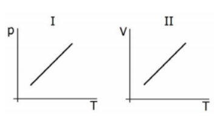

Lembre-se: A temperatura $T$ deve estar sempre em Kelvin (K).
2. Transformação Isobárica (Lei de Charles e Gay-Lussac)
Ocorre quando a pressão permanece constante ($P_1 = P_2$).
Relação: $\frac{V_1}{T_1} = \frac{V_2}{T_2}$
Volume e Temperatura são diretamente proporcionais.
Figura 1: Transformação Isobárica.
3. Transformação Isocórica/Isométrica (Lei de Charles)
Ocorre quando o volume permanece constante ($V_1 = V_2$).
Relação: $\frac{P_1}{T_1} = \frac{P_2}{T_2}$
Pressão e Temperatura são diretamente proporcionais.
Figura 1: Transformação Isocórica.
4. Transformação Isotérmica (Lei de Boyle-Mariotte)
Ocorre quando a temperatura permanece constante ($T_1 = T_2$).
Relação: $P_1 \cdot V_1 = P_2 \cdot V_2$
Neste caso, Pressão e Volume são inversamente proporcionais. O gráfico é uma curva chamada isoterma.
Figura 1: Transformação Isotérmica.
💡 Física em Ação
🛞 Pneus e Viagens
Ao viajar, o atrito do pneu com a estrada gera calor. Como o volume do pneu é praticamente constante (Isocórica), o aumento da temperatura provoca um aumento na pressão interna. Por isso, recomenda-se calibrar os pneus ainda "frios".
🫧 Mergulho e Pressão
De acordo com a Lei de Boyle (Isotérmica), à medida que um mergulhador sobe e a pressão diminui, o volume de ar nos pulmões tende a expandir. Se ele prender a respiração durante a subida, essa expansão pode causar lesões graves.
✅ Questões Resolvidas (R 1 a 5)
R 1: Aplicação da Lei Geral
Enunciado: Um gás a 1 atm, 5 L e 300 K passa para 2 atm e 2 L. Qual a nova temperatura?
Enunciado: Uma bolha de ar de 1 cm³ sai do fundo de um lago (2 atm) e sobe à superfície (1 atm) sem mudar de temperatura. Qual o volume final?
Resolução:
Como a temperatura não muda, trata-se de uma transformação isotérmica. Dados: $P_1 = 2 \text{ atm}, V_1 = 1 \text{ cm}^3, P_2 = 1 \text{ atm}, V_2 = ?$
Uma massa gasosa está encerrada em um recipiente de volume $6\text{ litros}$ na temperatura de $27\text{ °C}$, exercendo pressão de $8\text{ atmosferas}$. Aquece-se o gás até que sua temperatura passe a ser o dobro da temperatura inicial e reduz-se o volume à terça parte do volume inicial. Pode-se afirmar que a nova pressão do gás vale:
A) $48\text{ atm}$
B) $12\text{ atm}$
C) $18\text{ atm}$
D) $6\text{ atm}$
E) $24\text{ atm}$
Resolução: Alternativa A.
Utilizamos a equação da Lei Geral: $\frac{P_1 \cdot V_1}{T_1} = \frac{P_2 \cdot V_2}{T_2}$.
1. Identificação e Conversão dos Dados:
2. Aplicação da Fórmula:
$$ \begin{aligned}
\frac{8 \cdot 6}{300} &= \frac{P_2 \cdot 2}{600} \\
\frac{48}{300} &= \frac{2 \cdot P_2}{600} \\
\text{Simplificando os denominadores (multiplicando ambos por 600):} \\
2 \cdot 48 &= 2 \cdot P_2 \\
96 &= 2 \cdot P_2 \\
P_2 &= \frac{96}{2} = \mathbf{48\text{ atm}}
\end{aligned} $$
Conclusão: O aumento da temperatura (que dobra) e a redução do volume (que cai para 1/3) combinam-se para elevar drasticamente a pressão do sistema.
T 12: (UFRGS) Análise de Gráficos de Transformações
Nos gráficos I e II abaixo, p representa a pressão a que certa massa de gás ideal está sujeita, T a sua temperatura e V o volume por ela ocupado.

Escolha a alternativa que identifica de forma correta as transformações sofridas por esse gás, representadas, respectivamente, em I e II.
A) Isobárica e isocórica.
B) Isotérmica e isocórica.
C) Isotérmica e isobárica.
D) Isocórica e isobárica.
E) Isocórica e isotérmica.
Resolução: Alternativa D.
A análise deve ser feita observando qual variável permanece constante para que a relação entre as outras duas seja uma reta linear:
$$ \begin{aligned}
\text{1. Gráfico I (} P \times T \text{):} \\
&\text{A pressão é diretamente proporcional à temperatura } (P \propto T). \\
&\text{De acordo com a Lei de Charles/Gay-Lussac, isso ocorre quando o } \\
&\mathbf{volume\ (V)\ \text{é\ constante}}. \text{ Portanto, é uma transformação } \mathbf{isocórica}. \\
\\
\text{2. Gráfico II (} V \times T \text{):} \\
&\text{O volume é diretamente proporcional à temperatura } (V \propto T). \\
&\text{De acordo com a Lei de Charles, isso ocorre quando a } \\
&\mathbf{pressão\ (P)\ \text{é\ constante}}. \text{ Portanto, é uma transformação } \mathbf{isobárica}.
\end{aligned} $$
Conclusão:
Gráfico I = Isocórica (ou isovolumétrica)
Gráfico II = Isobárica
T 13: (UEMG) Transformação Isovolumétrica nos Pneus
Antes de viajar, um motorista calibrou os pneus a $30\text{ psi}$ com temperatura de $27\text{ °C}$. Após rodar, a pressão subiu para $32\text{ psi}$. Considerando o volume do pneu constante e o ar como gás ideal, a temperatura mais próxima dos pneus aquecidos é:
A) $29\text{ °C}$.
B) $38\text{ °C}$.
C) $47\text{ °C}$.
D) $52\text{ °C}$.
Resolução: Alternativa C.
Em uma transformação isovolumétrica, usamos a relação: $\frac{P_1}{T_1} = \frac{P_2}{T_2}$.
Lembrete crucial: A temperatura deve estar sempre em Kelvin.
$$ \begin{aligned}
\text{1. Conversão da temperatura inicial:} \\
T_1 &= 27 + 273 = 300\text{ K} \\
\\
\text{2. Aplicação da fórmula:} \\
\frac{30}{300} &= \frac{32}{T_2} \\
\frac{1}{10} &= \frac{32}{T_2} \\
T_2 &= 32 \cdot 10 = 320\text{ K} \\
\\
\text{3. Conversão de volta para Celsius:} \\
t_2 &= 320 - 273 = \mathbf{47\text{ °C}}
\end{aligned} $$
O valor exato é $47\text{ °C}$, correspondendo à alternativa C.
T 14: (PUC-RJ) Mergulho e Pressão Hidrostática
A cada $10\text{ m}$ de profundidade a pressão sobre um mergulhador aumenta $1\text{ atm}$ com relação à pressão atmosférica. Qual seria o volume de $1\text{ L}$ de ar inspirado ao nível do mar, quando o mergulhador estivesse a $30\text{ m}$ de profundidade?
A) $3\text{ L}$.
B) $4\text{ L}$.
C) $25\text{ mL}$.
D) $250\text{ mL}$.
E) $333\text{ mL}$.
Resolução: Alternativa D.
Utilizamos a relação para transformações isotérmicas: $P_1 \cdot V_1 = P_2 \cdot V_2$.
1. Determinação das Pressões:
Ao nível do mar ($P_1$): A pressão é de $1\text{ atm}$.
A 30m de profundidade ($P_2$): Temos a pressão atmosférica ($1\text{ atm}$) somada à pressão da coluna de água ($3\text{ atm}$, pois são $1\text{ atm}$ a cada $10\text{ m}$).
Logo, $P_2 = 1 + 3 = \mathbf{4\text{ atm}}$.
2. Aplicação da Lei de Boyle:
$$ \begin{aligned}
P_1 \cdot V_1 &= P_2 \cdot V_2 \\
1\text{ atm} \cdot 1\text{ L} &= 4\text{ atm} \cdot V_2 \\
V_2 &= \frac{1}{4}\text{ L} \\
V_2 &= 0,25\text{ L}
\end{aligned} $$
3. Conversão para mililitros (mL):
Como $1\text{ L} = 1000\text{ mL}$:
$$ V_2 = 0,25 \cdot 1000 = \mathbf{250\text{ mL}} $$
Conclusão: Ao mergulhar para uma pressão quatro vezes maior, o volume do gás é reduzido a um quarto do valor original.
T 15: (UFJF-PISM) Transformação Isotérmica e Clapeyron
Considere que um recipiente fechado contendo $1\text{ mol}$ de um gás ideal sob pressão de $4,0\text{ atm}$ é submetido a uma expansão à temperatura constante de $127\text{ °C}$. Quando o gás estiver ocupando um volume de $32,8\text{ L}$, a pressão exercida por ele será:
A) $0,32\text{ atm}$
B) $0,40\text{ atm}$
C) $1,0\text{ atm}$
D) $2,0\text{ atm}$
E) $2,6\text{ atm}$
Resolução: Alternativa C.
Embora o gráfico mostre dois pontos, as informações fornecidas no enunciado (número de mols, temperatura e volume final) nos permitem usar diretamente a Equação de Clapeyron para o estado final.
1. Conversão da Temperatura para Kelvin:
$$ T = 127 + 273 = 400\text{ K} $$
2. Identificação dos dados para o ponto final: